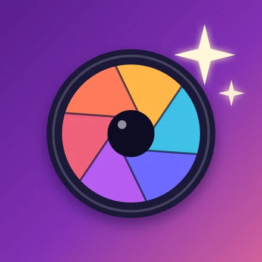
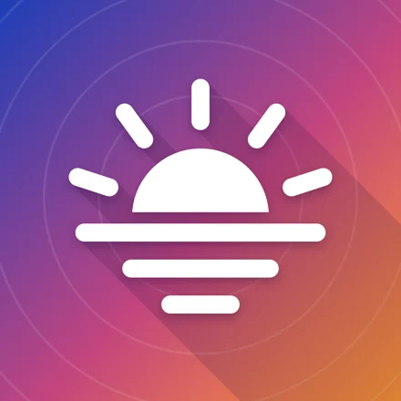

FotoTip ist ein Foto-Lexikon für die Hosentasche, das auch offline funktioniert. Mit Anleitungen von Belichtung bis Nachthimmel, Antworten auf häufige Fragen, Porträtposen und Technik-Tipps.
Wichtigste Funktionen
- 116 Anleitungen und 220 Fragen und Antworten
- 32 gezeichnete Posen mit „Dem Model zeigen“
- Sechs Rechner, u. a. ND-Filter und Schärfentiefe
- Datenbank mit 52 Kameras und 109 Objektiven
- Spickzettel, Checklisten und Glossar
Arbeitet zusammen mit

FotoPlánPlant, wann das Licht für dein Shooting am besten ist.
Datenschutzerklärung (auf Englisch)
Die App ist in der Beta-Phase über TestFlight.